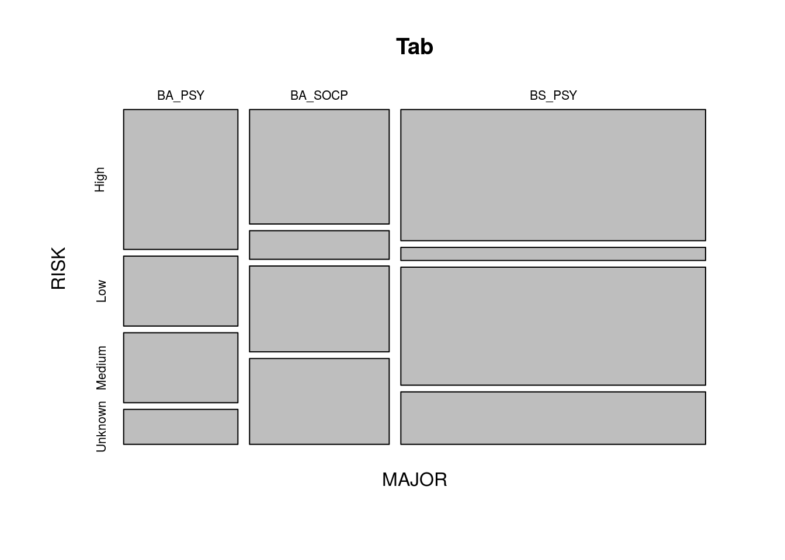
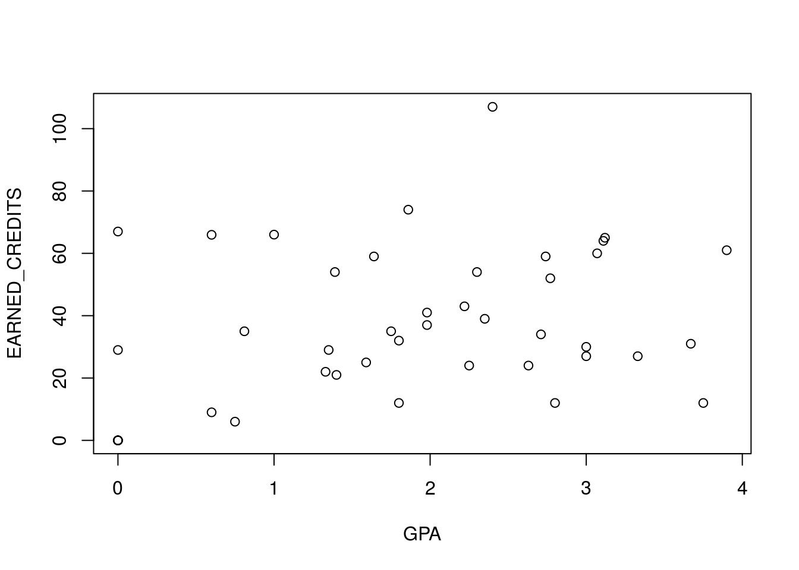
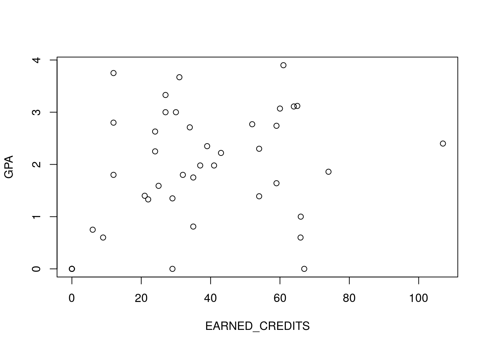
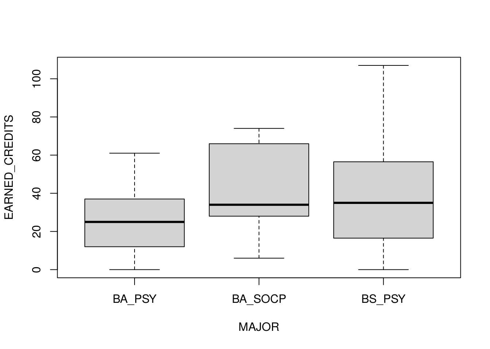

F Graphing in R
by Doc P, 10 Jun 2020
This is a very brief introduction to Graphing using R. For a much more thorough look at the capabilities of R refer to series 2 of the R tutorial videos by Mike Marin. (https://www.youtube.com/playlist?list=PLqzoL9-eJTNBDdKgJgJzaQcY6OXmsXAHU)
One of the best qualities of R is that it has comprehensive and high quality graphics capabilities. Some of these features require that you download extensions to the basic package, but many are available in the standard version of R. We will stick with things that can be done with the standard version.
First you should download the data set Unenrolled.csv from the DATA folder on our D2L site, and move it to the folder on your computer or flash drive where you keep your data. Then open RStudio, which automatically opens R. (Note: These data are actually information from a group of students who were recently but not currently enrolled at Clarion as Psychology BA, Psychology BS, or SOC/PSY BA students.
Next,read the file into R. This can be done in any of several ways: you can set your working directory to your DATA folder and enter the following code into R.
Unenrolled<-read.csv(“Unenrolled.csv”)
Note that I chose to keep the file name Unenrolled. You can use any file name you want but it should be descriptive enough so you will remember which file is which as you work through your analysis and create subsets. For right now, don’t worry about why you are doing some of the things (like using that funny “<-“ symbol) just do them. By the way <- is the left arrow followed by the dash on your keyboard. Be picky. R cares about punctuation, capitalization and the like. UNENROLLED is not the same as Unenrolled.
Alternatively you could use the following code:
Unenrolled<-read.csv(file.choose())
which will open a drop down box allowing you to navigate to the folder and file you want.
Finally, and easiest from my perspective, you can simply use the “Import Dataset” command from the “Environment” window of RStudio. This is the upper right hand window if no one has rearranged your RStudio display. This also will open a drop down box allowing you to navigate to your folder and file. For right now, use the “From Text (base)” command from the dropdown menu.
Once the file is read into R you should “attach” the data set. This allows R to find variables within the data set when you specify them in commands. There are other ways to identify variables but, for our purposes, I find that “attach” is the easiest.
attach(Unenrolled)
Now type
Unenrolled
into the R console (lower left hand of the RStudio display)
This will list the data set. If there isn’t enough room to list all the variables across on your display, some may be moved below the others, but it should all be there. This step isn’t necessary but it does help to make sure that we have really imported the data we wanted to and that it is all as it should be.
Now we can do some graphing.
The basic graphing command in R is “plot”.
Type this code:
Tab <- table( MAJOR, RISK)
plot(Tab)
a stacked bar graph which looks like the one above should appear in the lower right window of RStudio.
MAJOR and RISK are both “categorical variables”, meaning that they are not numbers but just classifications. By default R puts things in alphabetical order so we have “High, Low, Medium” along the Y axis. We probably don’t want it that way and will learn to change that later but for now, let’s move on to another type of plot.
Type this code:
plot(GPA, EARNED_CREDITS)
This time we got a “scatter plot” with GPA on the X axis, EARNED_CREDITS on the Y axis, and a point for each person in the data set.
Now try:
plot( EARNED_CREDITS, GPA)
which plots the same information with EARNED.CREDITS on the X axis and GPA on the Y.
Now try:
boxplot(EARNED_CREDITS ~ MAJOR)
This produces a “box and whiskers” plot with the majors on the X axis and credits earned on the Y.
Useful commands
You may have noticed that some of the information on our graphs was not as nicely presented as we might want. On our plot of earned credits by major
boxplot(EARNED_CREDITS ~ MAJOR)
the numbers are printed up and down rather than left to right on the Y axis. Most people prefer to print the numbers on the Y axis horizontally rather than vertically. Let’s fix this.
Type the following code:
boxplot(EARNED_CREDITS ~ MAJOR, las = 1)
Notice that the numbers on the Y axis have turned to make them more readable.
We may also want to add labels to the axes. Type this code
boxplot(EARNED_CREDITS ~ MAJOR, xlab = “Major”, ylab = “Credits Earned”)
We now have labels on the axes, but our numbers have returned to the vertical orientation. That’s because our new command completely redrew the plot. We will fix this when we do the next step.
Now try:
boxplot(EARNED_CREDITS ~ MAJOR, xlab = “Major”, ylab = “Credits Earned”, las = 1, main = “Boxplot of Credits Earned by Major”)
This produces a plot with a title, labels on both axes, and the numbers printed horizontally.
There are a lot more things that R can do with graphs. Some are mentioned in the Marin video on graphing and some will come up as we work through examples during the semester. For now, I think you have a basic grasp of some of the more useful graphing commands in R.